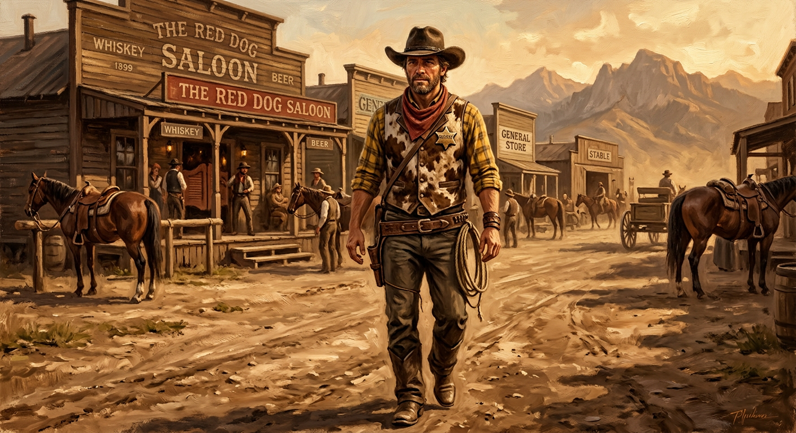

EL COMISARIO
DE BLACKWATER
Una elegía con estrella de latón · RDR2 × Toy Story
CAPÍTULO 1 · ESCENA I — LA PROVEEDURÍA
clic, espacio o → para avanzar
Edición ilustrada interactiva del fanfiction de Chuy & Sofía. Texto: © de los autores (obra derivada sin fines de lucro). RDR2 © Rockstar Games · Toy Story © Disney/Pixar.
Expedientes del campamento
El camino de la banda (1899–1907)
Cada parada, con su fecha y su capítulo. El mapa avanza con la historia.
Diario de objetos
Cinco objetos, cinco arcos. Continuidad estricta: nada entra ni sale sin registro.